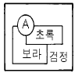
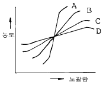
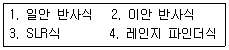

사진기능사 (2003-01-26 기출문제)
1과목: 사진일반
1. 카메라 옵스큐라에 대한 설명 중 옳지 않은 것은?
- 카메라 옵스큐라는 라틴어로 '어두운 방'이란 뜻이다.
- 그림을 그리기 위한 보조수단으로 만들어졌다.
- 소크라테스에 의해 고안되었다.
- 바늘구멍 사진기의 원리와 비슷하다.
(정답률: 88%)

2. 파장이 가장 긴 파장대의 색상은?
- 청색
- 녹색
- 보라색
- 빨강색
(정답률: 87%)
3. 우리가 보통 눈으로 지각할 수 있는 색지각과 가장 관계있는 것은?
- 적외선
- α선(알파선)
- 가시광선
- 자외선
(정답률: 91%)
4. 다음 색 중에서 굴절율이 가장 큰 것은?
- 적색
- 황색
- 녹색
- 청자색
(정답률: 66%)
5. 일반 주광(daylight)용 필름의 색온도는?
- 2800K
- 3200∼3400K
- 5500∼6000K
- 12000K
(정답률: 80%)
6. 종이를 질산은 용액에 담갔다가 건조시킨 감광재료 위에 나뭇잎이나 레이스 등의 편평한 물체를 놓고 햇빛에 직접 노출시켜 물체의 윤곽을 나타내는 방법으로 사진적인 이미지를 얻을 수 있는데 이러한 이미지를 무엇이라 하는가?
- 포토제닉드로잉
- 고스트이미지
- 다게레오이미지
- 헬리오그래피
(정답률: 58%)
7. 사진의 역사에 대한 설명이다. 발명 연대가 가장 늦은 것은?
- 다게르 - 은판 사진법 발명
- 아처 - 습판법 발명
- 탈보트 - 칼로타입 발명
- 니엡스 - 옵스큐라에 의해 상을 고정시키는데 성공
(정답률: 60%)
8. 콜로디온(collodion) 습판법이란?
- 유리판에 음화를 만드는 네거티브 방법
- 종이 위에 양화 원판을 얻는 포지티브 방법
- 유리판에 양화를 만드는 방법
- 은 동판에 양화를 만드는 방법
(정답률: 60%)
9. 빛은 피사체에 이르는 경로에 따라 직사광, 반사광, 산광으로 구분될 수 있다. 다음 설명 중 틀린 것은?
- 직사광은 강하고 폭이 넓어서 명확하고 세밀한 묘사가 가능하다.
- 반사광은 부드럽고 자연스러운 효과를 내는데 사용된다.
- 산광은 콘트라스트가 강하여 개성이 있는 사진을 만들 수 있다.
- 산광은 광원에서 나오는 빛이 그 빛을 확산시켜 주는 어떤 물체를 통과하여 생긴다.
(정답률: 55%)
10. 비네트(Vignette)효과를 내려면 어떻게 하는 것이 가장 좋은가?
- 주광과 반사광으로
- 사광의 높은광(High light)으로
- 화면의 주변광을 부족하게
- 역광 효과를 강하게
(정답률: 69%)
11. 다음 그림에서 A부분을 뚜렷하게 튀어나오게 하려면 어떤색이 가장 적합한가?

- 남색
- 감청
- 흰색
- 자주
(정답률: 91%)
12. 산업재해를 조사하는 주된 목적으로 적합한 것은?
- 같은 종류의 재해가 되풀이해서 일어나지 않도록 하기 위해
- 책임추궁을 하기 위해
- 재해를 조사하여 보고서를 작성하기 위해
- 재해가 발생한 사업장의 사업주를 고발하기 위해
(정답률: 82%)
13. 사진의 오염방지를 위해서 취할 사항이 아닌 것은?
- 손에 화학 약품이 묻으면 손을 깨끗히 씻는다.
- 탱크나 쟁반 그리고 다른 장비들은 사용 전과 사용후 깨끗히 헹군다.
- 현상액에 정착제나 중간 정지액이 들어가지 않도록 특별히 유의한다.
- 정착액의 오염 방지를 위해 현상한 필름은 반드시 수세를 여러번 한 후 정착액에 넣는다.
(정답률: 86%)
14. 뉴톤(Newton)에 의해 주장된 빛의 입자설로 설명될 수 없는 현상은?
- 직진
- 반사
- 굴절
- 간섭
(정답률: 100%)
15. 인화작업시 필름을 다루는 방법으로 가장 바람직한 것은?
- 필름 한가운데를 잡는다.
- 입으로 불어 먼지를 털어 낸다.
- 양쪽 모서리를 조심스레 잡는다.
- 캐리어를 확대기에 끼운 채로 필름을 빼낸다.
(정답률: 73%)
16. 보통 촬영용 필름(film)의 지지체로서 많이 사용되고 있는 재료는?
- 폴리에틸렌(PE)
- 아크릴(Acryl)
- 셀룰로오즈 트리아세테이트(cellulose triacetate)
- 폴리스틸렌(PS)
(정답률: 60%)
17. 다음 그림은 사진재료의 특성곡선을 나타낸 것이다. 농담 상태가 가장 경조에 해당하는 것은?

- A
- B
- C
- D
(정답률: 80%)
18. 현상 주약이 아닌 것은?
- 메톨
- 하이드로퀴논
- 아황산나트륨
- 페니돈
(정답률: 79%)
19. 현상촉진제로 사용할 수 없는 것은?
- 수산화나트륨(NaOH)
- 인산나트륨(Na3PO4)
- 탄산수소나트륨(NaHCO3)
- 황산(H2SO4)
(정답률: 95%)
20. 정착에 관한 설명 중 맞지 않는 것은?
- 감광재료를 필요이상으로 정착액속에 장시간 담가 놓으면 흑화된 화상부분을 감력시킨다.
- AgCl을 주로한 감광재료는 AgI를 포함하는 감광재료보다 장착시간이 빠르다.
- 고온의 정착액은 정착능력을 높여주나 막면을 경화시키고 정착액의 피로를 빨리오게 한다.
- 정착이란 미노광부분의 할로겐화은을 용해하여 유출시키는 것이다.
(정답률: 31%)
2과목: 사진재료 및 현상
21. 신속정착 주약으로 사용되나 보존성이 나쁜 결점이 있는 약품은?
- 메톨
- 티오황산암모늄
- 티오황산나트륨
- 브롬화칼륨
(정답률: 40%)
22. 적정 노출 및 현상과 비교하여 노출을 많이 주고 현상을 그 만큼 짧게하면 그 결과는 어떻게 나타나는가?
- 경조
- 중간조
- 연조
- 변화가 없다.
(정답률: 32%)
23. 인화지용 D-72 현상액의 특성을 바르게 나타낸 것은?
- 온흑조
- 냉흑조
- 순흑조
- 온조
(정답률: 29%)
24. 흑백 인화지를 특성(할로겐화은의 구성방식)별로 분류하였을 때 해당되지 않는 것은?
- Gas light지
- Bromide지
- Chloro Bromide지
- Chloro Fluorine지
(정답률: 44%)
25. 사진 인화지를 만들 때 버라이터(Baryta)지는 어떤 물질을 포함하고 있는가?
- 수산화나트륨(NaOH)
- 황산바륨(BaSO4)
- 황산칼슘(CaSO4)
- 황산구리(CuSO4)
(정답률: 41%)
26. 사진유제의 감도를 높이는 방법을 화학증감이라하는데 이 화학증감과 관계가 없는 것은?
- 정착증감
- 환원증감
- 유황증감
- 금증감
(정답률: 32%)
27. 현상액에 관한 설명 중 옳지 않은 것은?
- D-76은 미립자 현상액이다.
- 현상액은 현상주약(환원제), 산화방지제, 촉진제, 억제제 등으로 구성된다.
- 하이드로퀴논이 많이 들어가면 콘트라스트(contrast)는 강해진다.
- 메톨(Metol)과 하이드로퀴논(Hydroquinone)을 사용한 것이 PQ현상액이다.
(정답률: 68%)
28. 스파팅(Spotting)이란 용어와 가장 관련 깊은 것은?
- 촬영기법
- 촬영훈련
- 인화기법
- 사진수정
(정답률: 48%)
29. 다계조 인화지(가변성 콘트라스트 인화지)에 대한 설명중 틀린 것은?
- 일반인화지와 달리 고유의 인화지 호수를 갖고 있지 않다.
- 확대기에 필터를 끼우면 콘트라스트를 변화시킬 수 있다.
- 필터를 사용하지 않고 그대로 사용하면 4호에 해당하는 계조를 나타낸다.
- 필터를 사용하지 않아도 사진을 만들 수 있다.
(정답률: 42%)
30. 정착액의 주약은?
- 무수아황산나트륨
- 티오황산나트륨
- 무수탄산나트륨
- 빙초산
(정답률: 65%)
31. 다음 보기중 시계차 보정을 요하는 것만을 골라낸 것은?

- 1, 2
- 3, 4
- 1, 3
- 2, 4
(정답률: 65%)
32. 카메라 구성요소가 아닌 것은?
- 결상기구
- 파인더기구
- 필름현상기구
- 노출조정기구
(정답률: 71%)
33. 일안 반사식 카메라의 빛이 들어오는 순서중 맞는 것은?
- 렌즈-반사경-펜타프리즘-접안렌즈
- 렌즈-펜타프리즘-반사경-접안렌즈
- 반사경-펜타프리즘-접안렌즈-렌즈
- 렌즈-스크린-반사경-접안렌즈
(정답률: 75%)
34. 이미지 써클(Image Circle)이란?
- 렌즈가 초점이 맞지 않았을 때 만들어 주는 이미지
- 영상(影像)의 주변 상태
- 실상(實像)주변에 생기는 허상의 환상 상태
- 렌즈가 확실히 샤프(sharp)한 상(像)을 만드는 범위
(정답률: 71%)
35. 일반적으로 화각이 63° 에서 102° 정도의 넓은 화각을 가진 렌즈는?
- 표준렌즈
- 광각렌즈
- 망원렌즈
- 줌렌즈
(정답률: 89%)
36. 광각렌즈를 설명한 것 중 맞지 않는 것은?
- 화상이 작게 표현된다.
- 화각이 좁아진다.
- 원근감이 과장된다.
- 피사계 심도가 깊어진다.
(정답률: 75%)
37. 렌즈셔터가 포컬플레인셔터보다 좋은 점은?
- 빠른 셔터 스피드를 얻을 수 있다.
- 렌즈 교환이 쉽다.
- 플래시 동조가 가능하다.
- 셀프타이머가 된다.
(정답률: 50%)
38. 사진촬영에 있어서 반사조명기구 reflector로서 가장 적합한 것은?
- 사진용엄브렐러
- 오팔글래스
- 허니컴
- 스누트
(정답률: 68%)
39. 한 장면의 일부분만을 측정할 때 사용되는 노출계는?
- 스포트 노출계
- 내장식 노출계
- 입사식 노출계
- 자동식 노출계
(정답률: 85%)
40. 노출계의 부분측광 가운데 수광각을 극히 작게한 측광 형식은?
- 평균측광
- 중앙중점측광
- 부분흐림
- 스포트측광
(정답률: 41%)
3과목: 사진기계 및 촬영
41. 카메라 액세서리 중 삼각대에 대한 설명으로 옳은 것은?
- 망원렌즈를 사용할 때는 삼각대를 사용할 수 없다.
- 대형카메라에는 사용할 수 없다.
- 일반적으로 3단으로 펼쳐지는 알루미늄 삼각대가 많이 사용된다.
- 콤팩트 카메라 사용시에는 삼각대를 사용할 수 없다.
(정답률: 80%)
42. 피사체가 받은 빛의 최대량과 최소량의 차이를 무엇이라고 하는가?
- 조명비
- 반사율
- 흡수율
- 콘트라스트
(정답률: 71%)
43. 동조(synchronization)란?
- 플래시가 켜지기 시작해서 꺼질 때까지 시간을 조정 하는 것을 말한다.
- 셔터가 열리기 시작하여 닫힐 때까지 시간을 말한다.
- 플래시 최고 밝기와 셔터개방이 일치하는 것을 말한다.
- 플래시가 작동하는 시간부터 셔터가 닫히는 시간까지를 말한다.
(정답률: 53%)
44. 주광용(Daylight type) 컬러필름으로 형광등하에서 촬영하면 어떤 색조(色調)로 되는가?
- 녹(錄)
- 황(黃)
- 적(赤)
- 청(靑)
(정답률: 40%)
45. 렌즈의 표면, 경동 혹은 카메라속에서 반사가 일어나 화상에 연속적인 원형 또는 조리개 무늬 모양이 나타나는 현상은?
- 포그(Fog)
- 플레어(Flare)
- 만곡(Curvature)
- 이그러짐(Distortion)
(정답률: 76%)
46. 가이드 넘버의 공식은?
- 조리개 값 × 렌즈의 내경
- 조리개 값 × 조명거리
- 조명거리 × 초점거리
- (렌즈의 외경 - 렌즈의 내경) × 조명거리
(정답률: 50%)
47. 보통 사진 촬영시의 밝기를 산출하는 기준이라고 볼 수 없는 것은?
- 사진 감광재료의 분광감도
- 시각의 분광감도비
- 조명광의 분광에너지 분포
- 렌즈와 필터의 분광투과율
(정답률: 50%)
48. 확대 인화할 때 인화지를 넣은 채 이젤 마스크를 어떤 각도로 기울여 노출하면 화상이 비뚤어져서 사람이 가늘고 길게 나타나는 사진 기법은?
- 더징
- 디포메이션
- 비네팅
- 포토그램
(정답률: 64%)
49. 다음 확대기들 중 타기종에 비하여 네거티브의 흠이나 먼지가 인화상에 뚜렷하게 나타나는 것은?
- 집광식
- 집산광식
- 산광식
- 다중노출식
(정답률: 67%)
50. 원판에 대한 조명이 고르고 화조가 부드러우며 입상(粒狀)이 거칠어 지지 않고 원판의 작은 먼지나 흠이 나타나지 않는 장점을 가지고 있는 확대기는?
- 집광식(集光式) 확대기
- 반사식(反射式) 확대기
- 집산광식(集散光式) 확대기
- 산광식(散光式) 확대기
(정답률: 75%)
51. 셔터 속도나 조리개의 한계를 넘는 매우 밝은 피사체를 촬영할 경우나 최대 조리개를 사용하여 심도를 얕게 하고 싶을 때 광량을 줄이기 위해서 사용되는 필터는?
- PL 필터
- ND 필터
- FL 필터
- CC 필터
(정답률: 67%)
52. 일반적으로 렌즈교환이 불가능하다고 생각할 수 있는 카메라 형식은?
- 포컬플레인셔터식 소형카메라
- 일안 반사식 카메라
- 이안 반사식 카메라
- 대형 카메라
(정답률: 46%)
53. 다음 필터 중에서 노출배수가 가장 큰 필터는?
- Green
- Yellow Orange
- Dark Red
- Dark Yellow
(정답률: 70%)
54. 1초 이상 노출하려 할 때 흔들림을 방지하기 위한 카메라 액세서리는?
- 릴리즈
- 데이터백
- 컨버터
- 후드
(정답률: 78%)
55. 가이드 넘버(Guide Number:GN) 32인 스트로보를 이용하여 4m 거리의 물체를 촬영할 때 적당한 조리개값은?
- f/5.6
- f/8
- f/16
- f/32
(정답률: 71%)
56. 포컬플레인(focal plane)셔터의 고속셔터는 어떠한 방법으로 구현하는가?
- 선막과 후막간의 간격을 줄인다.
- 스프링의 장력을 늘린다.
- 셔터막의 수를 늘린다.
- 셔터를 가볍게 만든다.
(정답률: 86%)
57. 노출측정이 어렵거나 측정치가 정확하지 않을 때 노출을 여러 단계로 과, 부족시키는 것을 무엇이라고 하는가?
- 비네팅
- 브라케팅
- 닷징
- 마케팅
(정답률: 60%)
58. 플래시 촬영시 조명효과를 미리 점검하기 위해 전자플래시 안에 설치된 텅스텐 전구를 무엇이라고 하는가?
- HMI 램프
- 할로겐 램프
- 모델링 램프
- 크세논 램프
(정답률: 32%)
59. 카메라를 보관하는 방법이다. 가장 옳은 것은?
- 따뜻하고 습기가 많은 곳에 보관한다.
- 사용하지 않을 때는 건전지를 빼 놓는다.
- 옷장 속에 보관한다.
- 직사광선 아래에 보관한다.
(정답률: 81%)
60. 렌즈의 얼룩을 닦을 때 사용할 수 있는 약품은?
- 에틸 알콜
- 벤젠
- 시너
- 아세톤
(정답률: 50%)